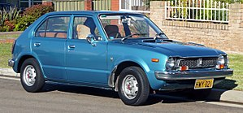

Honda Civic
Primeira geração
O Civic de primeira geração foi lançado em 11 de julho de 1972, mas vendido como modelo 1973 no Japão. Em Portugal foram apenas produzidas 100 unidades das suas edições mais raras (Orange Edition e Black Edition).
Ele era equipado com um motor 1.2 refrigerado a água, tinha freios a disco na dianteira, bancos de vinil reclináveis, painel que simulava madeira e rádio AM/FM e ar condicionado opcionais. Existiam três opções de carroceria, "Hatchback" de duas e quatro portas e "Wagon" de quatro portas. Em 1975 foi estreado o motor CVCC que tinha design de cabeçote que permitia a realização de uma combustão mais eficiente em relação a maioria dos motores da época. Em 1976, foi lançado um carro que usava como base a carroçaria "Hatchbak" duas portas do Civic chamado Accord.
Segunda geração
O Civic de segunda geração foi lançado em junho de 1979 sendo vendido como modelo 1980. Ele era mais largo e tinha uma forma mais angular, o motor 1.2 caiu em desuso e todos os Civic passaram a utilizar os motores CVCC, o 1.5 continuou sendo usado e foi introduzido um novo motor 1.3, a tecnologia CVCC adicionava uma válvula por cilindro permitindo que houvesse uma melhor eficiência na combustão. As carrocerias oferecidas eram "Hatchback" (três e quatro portas), "Sedan" (quatro portas) e "Wagon" (cinco portas).
_01.jpg)
Terceira geração
O Civic de terceira geração foi lançado em setembro de 1983 e foi vendido como modelo 1984. Os modelos ''Hatchback'' de quatro portas e ''wagon'' foram fundidos e resultaram em uma "wagovan'' uma espécie de SUV com tamanho reduzido. Um cupê duas portas chamado "CRX" foi introduzido, tinha tamanho reduzido, dimensões compactas e, consequentemente, era leve. Na terceira geração do Civic foram introduzidos os motores de série "D" que foram usados pela Honda até o final dos anos 90. Em 1984 foi lançado um modelo esportivo no mercado japonês chamado "SI", tinha suspensão melhorada e motor 1.6 DOHC com 130 cv. Nos EUA os modelos "SI" oferecidos eram o Civic "Hatchback" Com 91 cv e o CRX com o mesmo motor e estilo de carroceria. Em 1984 na versão "wagovan" foi introduzido um opcional de tração 4WD, este modelo recebia uma transmissão modificada para suportar este sistema de tração, o sistema era ativado através de um botão no painel, até 1987, neste ano, recebeu uma atualização que permitia que a tração 4WD fosse ativada quando as rodas dianteiras perdessem tração.
Quarta geração
Em setembro de 1987 foi estreada a quarta geração do Honda Civic, vendido como modelo 1988, A carroceria desta geração possui dimensões maiores e capo mais baixo em relação à da terceira geração. Foi oferecida uma grande quantidade de versões que foram vendidas em todo o mundo. A versão mais notável foi sem dúvidas a SiR equipada com o motor B16A DOHC VTEC que possuía 150 hp. Todos os modelos vendidos nos EUA tinham injeção eletrônica mas, em outros mercados ao redor do mundo versões carburadas estavam disponíveis.
_01.jpg)
Quinta geração
Lançado no Brasil em 1992, o Civic era importado nas configurações hatchback (DX, LSi, Si, e VTi), sedan (LX e EX), coupé (EX e EXS - a partir de 1994) e targa (CRX, Si e VTi). Havia opção de escolha entre o câmbio manual e o automático, embora este último fosse mais frequente, sendo a versão VTi tendo apenas câmbio manual.
Os motores oferecidos no Brasil eram: 1.5L-D15B2 (LSi); 1.5L-D15B7 (DX e LX); 1.6L-D16Z6 (Si, EX e EXS); B16A2 (VTi) e B16A3 (VTi 1995). Os motores D16Z6 e B16A2 e A3 eram oferecidos com a tecnologia VTEC.
A velocidade máxima do modelo VTI conforme a variante do modelo do eg9 ou eg6, é por volta dos 235 km/h.
A maioria dos modelos vendidos no Brasil foram importados dos Estados Unidos e já saiam da concessionária com bom nível de equipamentos (ar condicionado, direção hidráulica, conjunto elétrico, teto solar, air-bag duplo e freios ABS - versões EX, EXS e VTi).
Os modelos Civic dos anos de 1992 e 1993 eram montados no Japão para o mercado americano, e os modelos Civic 1994 e 1995 já eram montados no Estados Unidos.
Algumas unidades desembarcaram no Brasil via importação independente, os modelos encontram-se nas configurações VX, CX e Si. Visualmente, o sedan tinha a dianteira diferente do Hatch/Coupé: mudavam-se para-choque, capô, para-lamas e indicadores de direção (piscas).
As versões sedan, targa e hatch podem ser encontradas na série de jogos Gran Turismo, para os consoles Playstation e Playstation 2. Esta geração é muito popular nos EUA, aparecendo em grandes quantidades e variedades nos eventos de carros Tuning, além do filme Velozes e Furiosos.
Esta geração foi responsável pela construção da imagem de durabilidade e resistência que a Honda possui no país. Vários exemplares desta geração ainda seguem rodando nos dias atuais.

Sexta geração
Foi concebida no final de 1995, já como modelo 1996, com missão de suceder a geração anterior, que havia tido sucesso em vendas.
As versões existentes no mercado brasileiro eram LX-B, LX, EX e VTi. Há também unidades da versão CX importadas de maneira independente.
_01.jpg)